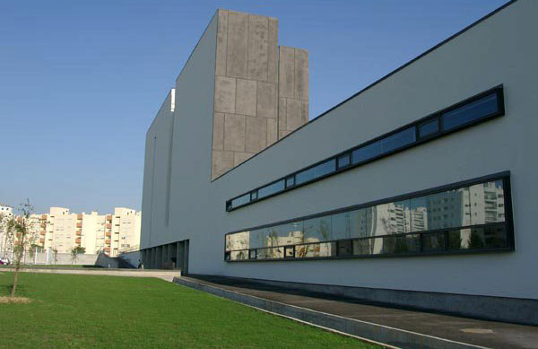
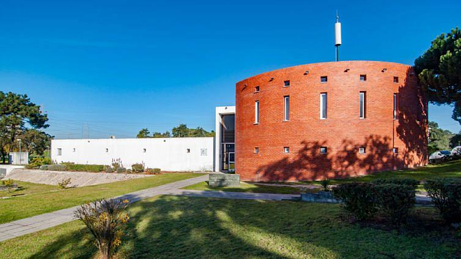
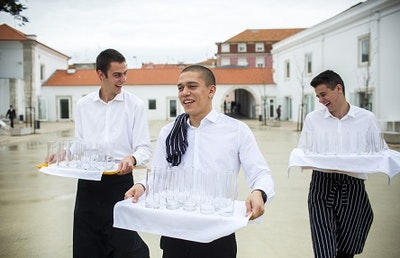
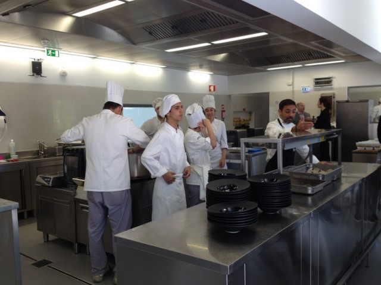

"Polytechnic Institute of Setúbal"


Polytechnic Institute of Setúbal
Created in 1979, the Polytechnic Institute of Setúbal (IPS), is a public institution of Higher Education,
consisting of five schools: Superior School of Education, Superior School of Technology of Setúbal,
Superior School of Business Sciences, Superior School of Technology of Barreiro and School of Health.
Source: https://www.facebook.com/ipsetubal/
"Hotel and Tourism School"


Hotel and Tourism School
With courses in the areas of initial training and continuing training, the Hotel and Tourism School of Setúbal follows the evolution of the sector, guaranteeing excellent training.
Located in the former Quartel do 11 – one of the historic buildings in the city of Setúbal – the School of Hotel and Tourism of Setúbal contributes to the response to the current qualification needs of the tourism sector,
especially in the Península de Setúbal region. As such, its offer focuses on the areas of cooking/pastry, catering and beverages, hotel management and nature and outdoor tourism, through Double Certification courses and Technological Specialization courses.
With a capacity for 300 students and located in a privileged location in the city, it offers structures such as an application hotel, an application restaurant, an application bar,
a sensory analysis room, a production kitchen and a kitchen with individual workstations , a technical kitchen auditorium, a hot and cold pastry shop and an auditorium.
Source: https://ecoescolas.abae.pt/escola/escola-de-hotelaria-e-turismo-de-setubal/